Projekter
H.C.A. Festivals Multimedieskærm
Forestil dig at stå midt under H.C.A. Festivals og blive mødt af en interaktiv multimedieskærm, der gør dig til hovedpersonen i H.C. Andersens magiske univers. Jeg præsenterer et koncept, der ikke bare informerer - det engagerer, inspirerer og samler mennesker.
Information, der fanger:
De to forreste skærme, formet som en åben bog, guider dig igennem festivalens events og lokationer. Alt, du skal vide, er lige foran dig – elegant og let tilgængeligt.

Kreativitet i centrum:
Gå bagom “bog-skærmen” og oplev interaktive tegnevægge, hvor du kan skabe din egen kunst. Tegningen kan du downloade eller få vist på den store skærm bagpå, hvor den bliver en del af en farverigt univers – et fælles værk, der hylder festivalens værdier om fællesskab og kreativitet.
Dine festival minder i realtid:
På disse skærme kan du se highlights fra festivalens events, fange de uforglemmelige øjeblikke og opleve festivalens essens gennem en konstant opdatering af indhold. De er en invitation til at opleve, føle og dele. Forestil dig en mosaik af billeder og videoer, der vises på flere skærme samtidigt, og som bringer festivalens magiske stemning til live.

Eventyrlige selfies:
På bagsiden af "bog-skærmen" finder du en selfie-sektion, hvor du kan vælge en baggrund fra ikoniske eventyr som Den Flyvende Kuffert eller Klods Hans. Tag et billede med dine venner og træd direkte ind i eventyret – en unik oplevelse, der skaber minder.
Fra væggen til eventyret:
Når du er færdig med din tegning, kan du nemt uploade den direkte fra tegnevæggen til HCA-universet. Dette sker via en intuitiv proces, hvor du med et enkelt tryk sender din kunstværk op på den digitale platform bag skærmene. Din tegning bliver derefter en del af et større kunstværk, der samles med andres bidrag.

Magisk atmosfære:
Atmosfæren fuldendes med ambient musik, der omfavner dig og gør oplevelsen magisk. Konceptet er intuitivt og designet til at tiltrække især unge – let at bruge, sjovt at dele og perfekt til sociale medier.
Re-design af restaurant Vår
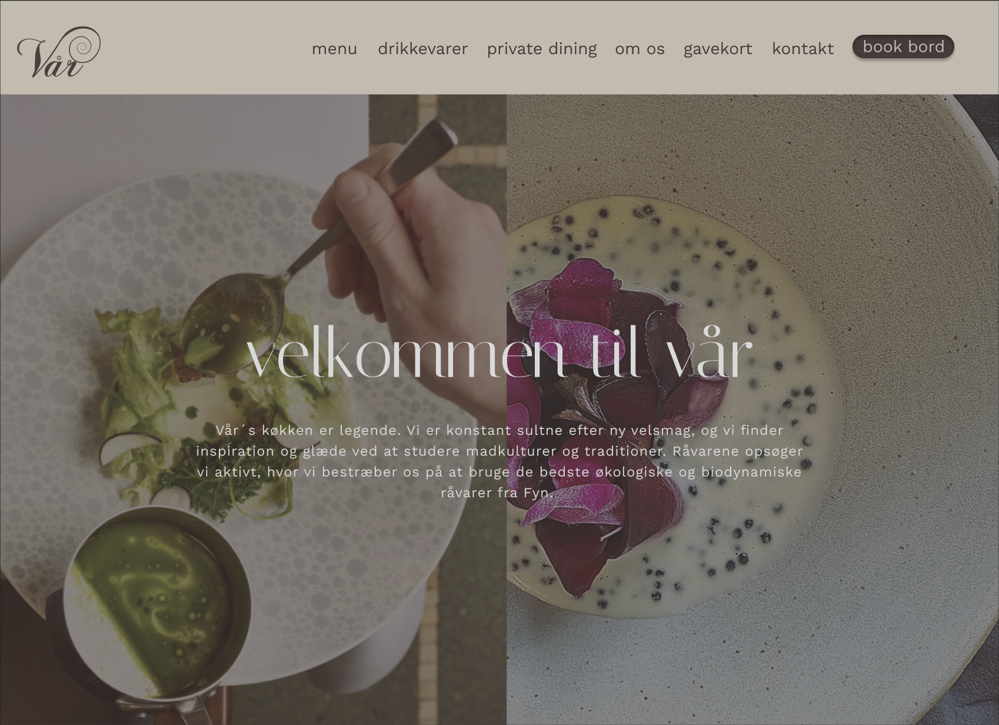Re-design af Restaurant Vårs hjemmeside (vaar.dk) med et helt nyt look. Re-designet er mere brugervenligt og har et nyt æstestisk look der både fremhæver restaurantens identitet og sikrer en problemfri, visuelt appellerende brugeroplevelse. En ny hjemmeside, der tiltrækker flere kunder og efterlader et stærkt førstehåndsindtryk.
Forside
I vores redesign har vi skabt en mere indbydende og brugervenlig forside. Vi har rettet balancen i menulinjen, så alle punkter fremstår ensartede og professionelle. Designet er blevet mere engagerende, og både visuelt og indholdsmæssigt præsenteres restaurantens identitet bedre. Resultatet er en mere tiltalende forside, der styrker førstehåndsindtrykket.
Før
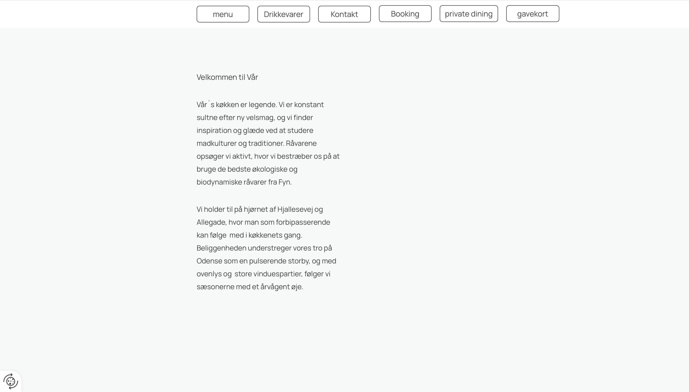Efter
Menukort
Vi har gjort menuen mere overskuelig, så brugerne nemt kan finde og forstå de forskellige retter. Ved at forenkle strukturen har vi gjort det lettere for gæsterne at navigere og få den information, de søger.
Før
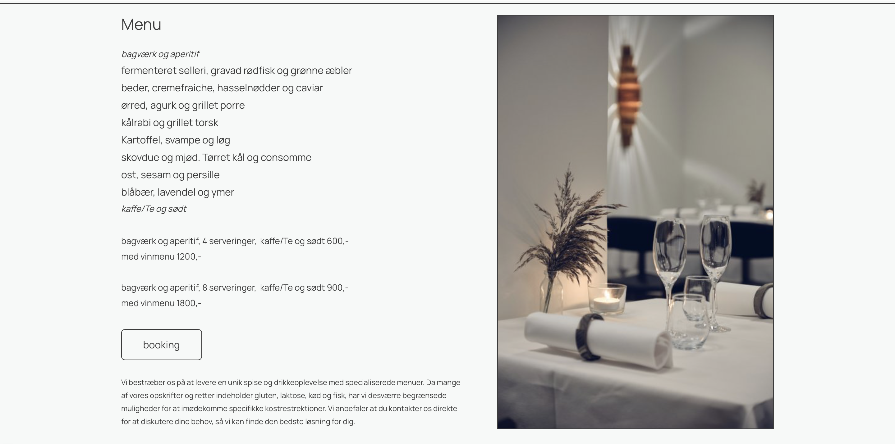Efter
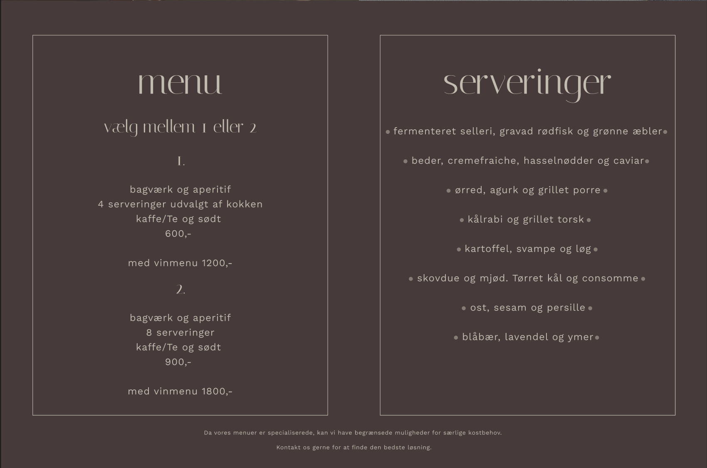Drikkevarer og Private Dining
Vi har forbedret designet af sektionerne for drikkevarer og private dining, så de fremstår mere overskuelige og indbydende. Selvom indholdet er det samme, er private dining-sektionen blevet opdateret med en praktisk bookingknap, der gør det nemmere for gæsterne at reservere. Begge sektioner er blevet designet, så de visuelt tilpasser sig resten af forsiden og giver en mere strømlinet brugeroplevelse.
Før
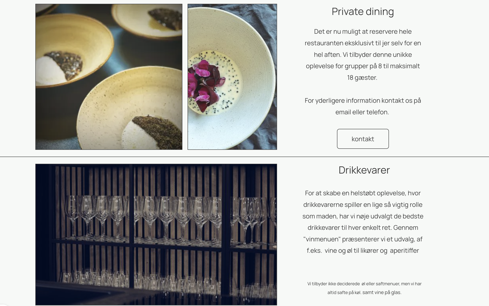Efter
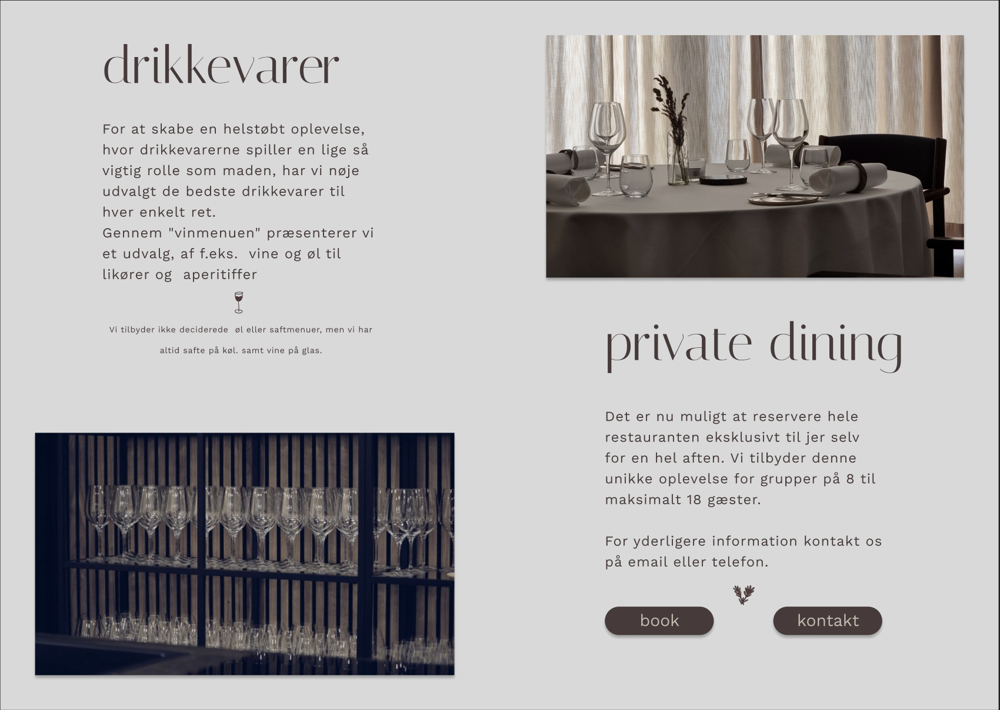Om os
Vi har tilføjet et “Om os”-afsnit, der giver restauranten en mere personlig og indbydende profil. Afsnittet er designet til at fortælle restaurantens historie og værdier på en engagerende måde, hvilket skaber en tættere forbindelse til gæsterne. Det nye design gør det nemt at få et indblik i restaurantens unikke identitet og giver en mere autentisk oplevelse.
Mobilversion
Vi har forenklet mobilversionen af hjemmesiden ved at erstatte de to menuer med en enkel dropdown-menu. Dette gør navigationen mere brugervenlig og pladsbesparende på telefonen, samtidig med at det understøtter Vår’s minimalistiske design. Derudover har vi tilføjet en pil nederst på siden, så brugerne nemt kan komme hurtigt tilbage til toppen. Denne funktion er baseret på feedback fra testpersoner, der ønskede en lettere måde at navigere på.
Før
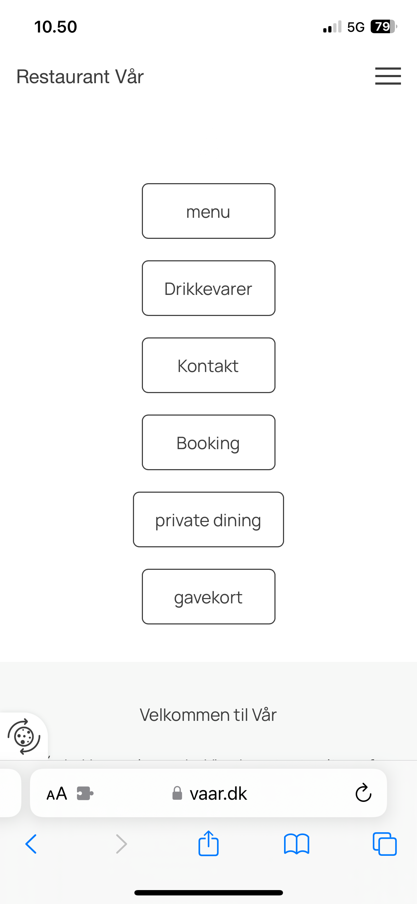 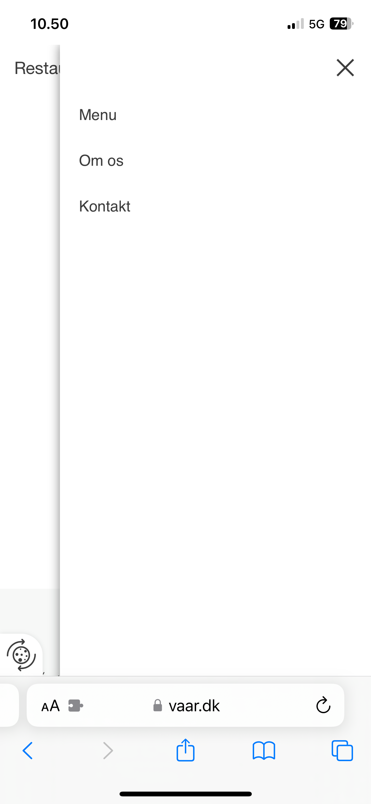Efter
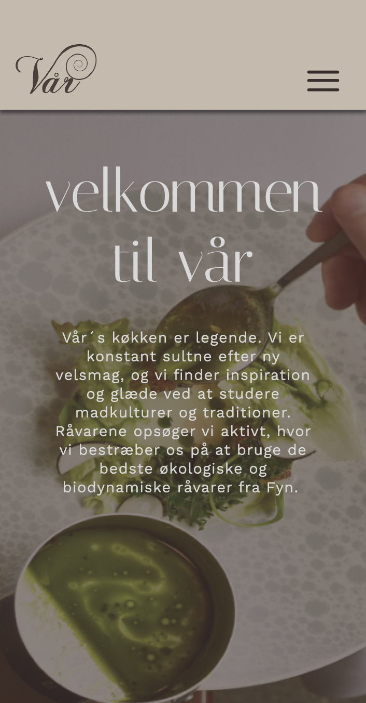 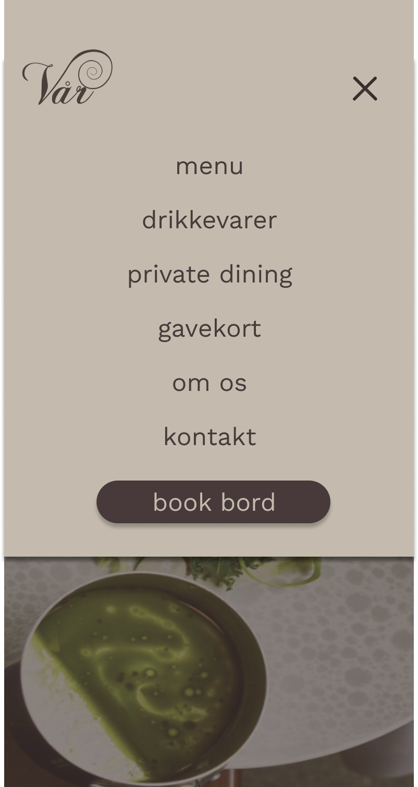Animation/GIF
En simpel og stilren animation/GIF designet i Adobe Illustrator og kodet i CSS for at give liv til illustrationerne. Kombinationen af grafisk design og kodning skaber en elegant og funktionel løsning.
Illustrator
Jeg har stærke evner i Adobe Illustrator, hvor jeg arbejder præcist med detaljer og bruger værktøjerne til at skabe glidende overgange og visuelt sammenhængende designs. Jeg er rutineret i at udvikle komplekse illustrationer og forberede dem til videre brug, såsom animation, med fokus på både æstetik og funktionalitet.
Sprite sheets/CSS
Jeg har erfaring med at skabe og forberede illustrationer i Adobe Illustrator til brug i animationer, hvor jeg sikrer præcise detaljer og et design, der fungerer problemfrit i kodningsprocesser som CSS. Jeg er også fortrolig med at opbygge sprite sheets, som effektivt samler animationens frames og gør dem lette at implementere og animere via CSS.
Album plakater

Albumplakater designet med en kreativ tilgang, hvor musikken bliver til visuel kunst. Jeg bruger FL Studio til at omdanne en WAV-fil til et visuelt udtryk, hvor lydbølgernes dynamik og struktur danner grundlaget for designet og transformerer sangenes energi til unikke visuelle elementer. Herefter finpudser jeg plakaterne i InDesign, hvor hvert layout, farvevalg og typografisk detalje samles for at skabe et design, der ikke kun er æstetisk, men også fortæller albummets historie på en måde, der fanger øjet og vækker nysgerrighed.
Lydbølger omdannet til noget visuelt
Jeg bruger FL Studio til at omdanne en WAV-fil til et visuelt udtryk, hvor lydbølgernes dynamik og struktur danner grundlaget for designet – en proces, jeg gentager for alle sange på et album for at sikre, at hver enkelt sang får sin egen unikke visuelle identitet.
The Weeknd - After Hours 2020

Mac Miller - Circles 2020
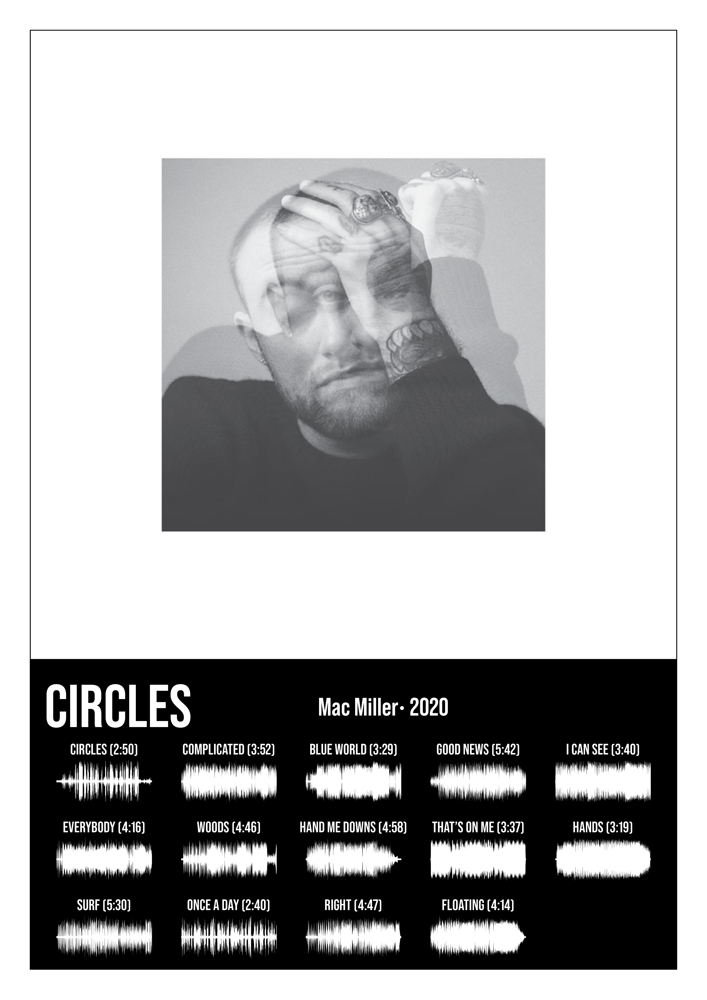Barkbuddies -"To haler, én kærlighed!"
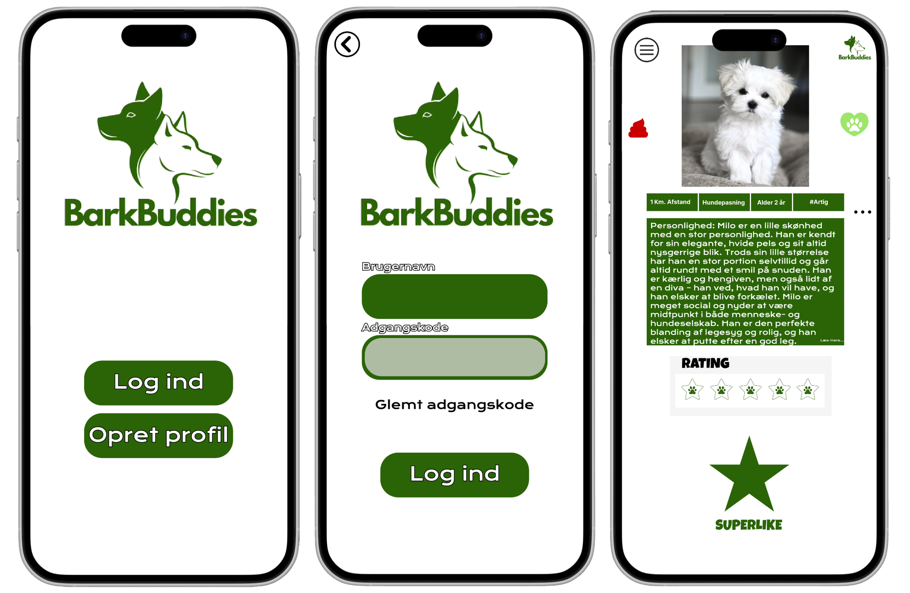Barkbuddies er en dating app, hvor du som ejer kan finde det perfekte match til din hund uanset om du leder efter hundepasning, parring eller legeaftaler.
Personliggør din profil
Skab din unikke profil med tags, billeder og en beskrivelse, der virkelig afspejler, hvem du er. Det hjælper ikke kun med at personliggøre din profil, men sikrer også, at du finder det helt rigtige match til din hund.
Chat med andre hundeejere
Kom i kontakt med andre hundeejere og lær både dem og deres hunde at kende. Med tags, beskrivelser og billeder kan du hurtigt få en fornemmelse af, om det er et match for dig og din hund – men det er altid rart at kunne chatte først og skabe en god forbindelse!
Swipe løs!
Swipe i dit eget tempo! Hos BarkBuddies er der ingen grænser, abonnementer eller skjulte gebyrer – kun ‘to haler, en kærlighed’. Byg din profil, og se din rating stige. Er du klar til at tage det næste skridt? Send et superlike og find dit perfekte match!
Cute Meets Brutal: The Hello Kitty x BABYMETAL Shoe

Jeg skaber kreative koncepter, der fusionerer kontrasterende universer og taler til forskellige målgrupper. Med fokus på eksklusivitet og humor udvikler jeg stærke kommunikationsstrategier og tone of voice, der fanger opmærksomheden på tværs af platforme som Instagram, TikTok og YouTube.
Hello Kitty sko men med et twist
Forestil dig et univers, hvor den rå, intense energi fra heavy metal møder Hello Kittys søde, farverige verden. Denne kontrast åbner op for et væld af kreative muligheder, hvor vi har eksperimenteret med at udvikle en Tone of Voice, der perfekt fanger denne unikke blanding. Resultatet er en spændende og nyskabende tilgang, der skiller sig ud og engagerer på en helt ny måde.
Tone of Voice/branding målrettet din platform
- Klassisk reklame med et råt og spændende tekstudtryk.
- Fokus på produktets eksklusivitet og attitude: “Rock Hard, Stay Cute”.
- Beskrivelse af skoen som den perfekte kombination af edgy og cute – en sko, der passer til en heavy metal koncert.
TikTok
- BABYMETAL starter en ny trend med “KITTY-dance”.
- Hurtige, sjove videoer, der viser, hvordan Hello Kitty og heavy metal smelter sammen.
- Brug af humor og catchy musik for at fange opmærksomheden og skabe viralitet.
YouTube
- Introducerer Hello Kitty som den nyeste medlem af et heavy metal band – BABYMETAL!
- Fokus på samarbejdet og skoens limited edition status: “Limited edition – get it before it’s gone!”
- En lidt længere video med musikvideo-stil og et glimt af Hello Kittys rejse i metalverdenen.